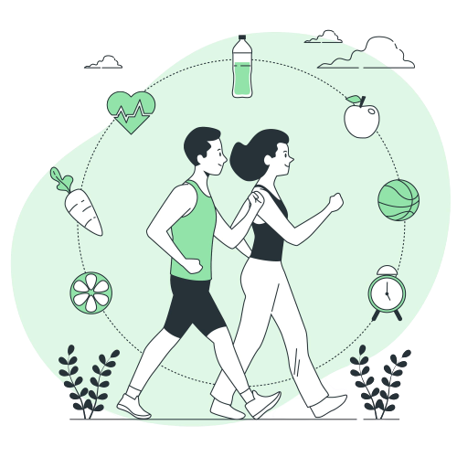

This page is dedicated to health and well-being through proper nutrition. Here you will find valuable information on how to lead a healthy lifestyle, promoting dietary practices that benefit your health and contribute to the achievement of Sustainable Development Goals. Our mission is to provide resources and knowledge that assist you in making informed decisions about your nutrition and well-being. Together, we will work to address the challenges of malnutrition and promote a healthy life for all.
The Sustainable Development Goals (SDGs) are a set of 17 global objectives adopted by all United Nations Member States in 2015. These goals were designed to address a wide range of global challenges, from eradicating poverty to combating climate change. Each of the SDGs focuses on key areas of sustainable development, and the third one, "Health and Well-being" (SDG3), is essential for the well-being of communities and global progress.
Within the framework of the Sustainable Development Goals, food health plays a crucial role. SDG 3 focuses on "Ensuring healthy lives and promoting well-being for all at all ages." This includes access to nutritious and safe food, as well as the promotion of healthy dietary practices to prevent diseases and improve the quality of life.
Despite advancements in health and nutrition awareness, many communities around the world continue to face challenges in terms of access to healthy foods, knowledge about balanced nutrition, and the fight against diet-related diseases. Malnutrition, whether due to excess or deficiency, remains a significant problem in many regions.
Mission: Our mission is to promote health and well-being through education and the promotion of healthy dietary practices. We strive to provide accurate information and useful resources that help individuals make informed decisions about their nutrition and lifestyle.
Vision: Our vision is a world in which all people have access to nutritious and healthy food, and where health and well-being are a priority for everyone. We aim to contribute to the achievement of SDG 3, working together to attain a healthy life and promote well-being.
Here are some healthy and easy-to-prepare recipes that promote good nutrition.
Ingredients:
Instructions:
Ingredients:
Instructions:
For more information on health and nutrition, please refer to resources from reputable health organizations such as the World Health Organization (WHO) and the Centers for Disease Control and Prevention (CDC).
Get additional information about a healthy diet on the WHO website.
Learn about the benefits of maintaining a healthy diet on the CDC website.
You can also visit our forum and other pages located in the search bar.